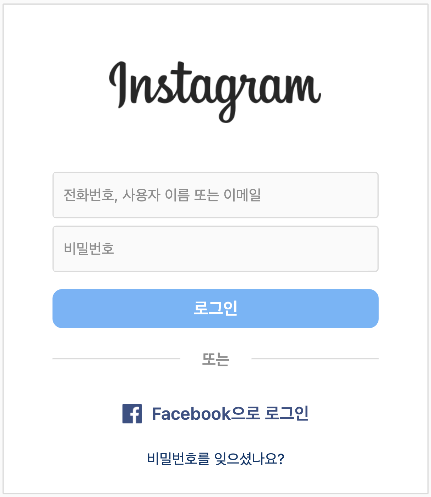
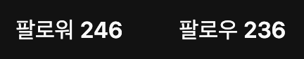
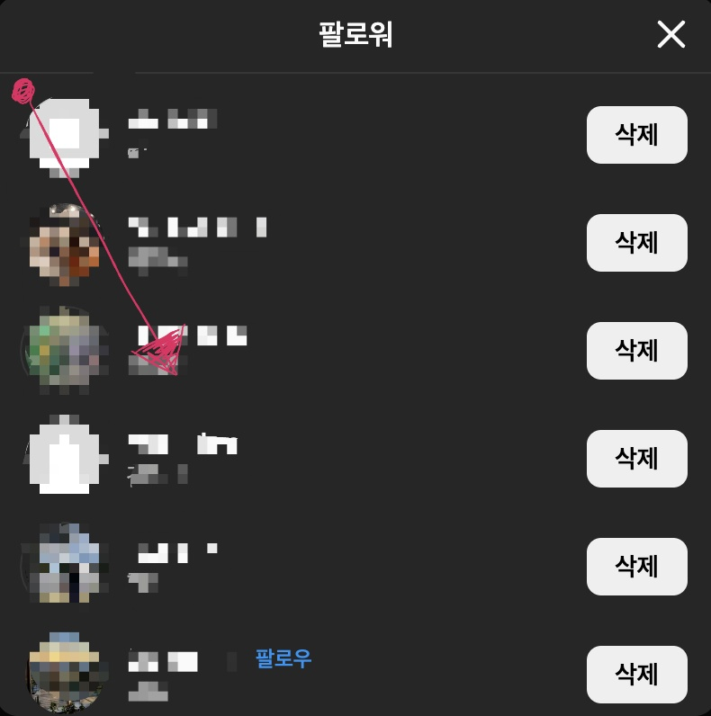
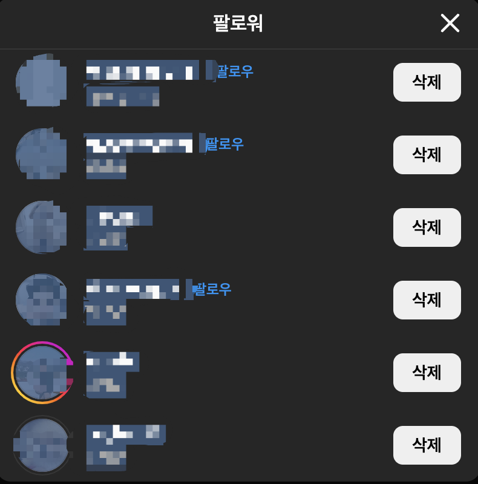
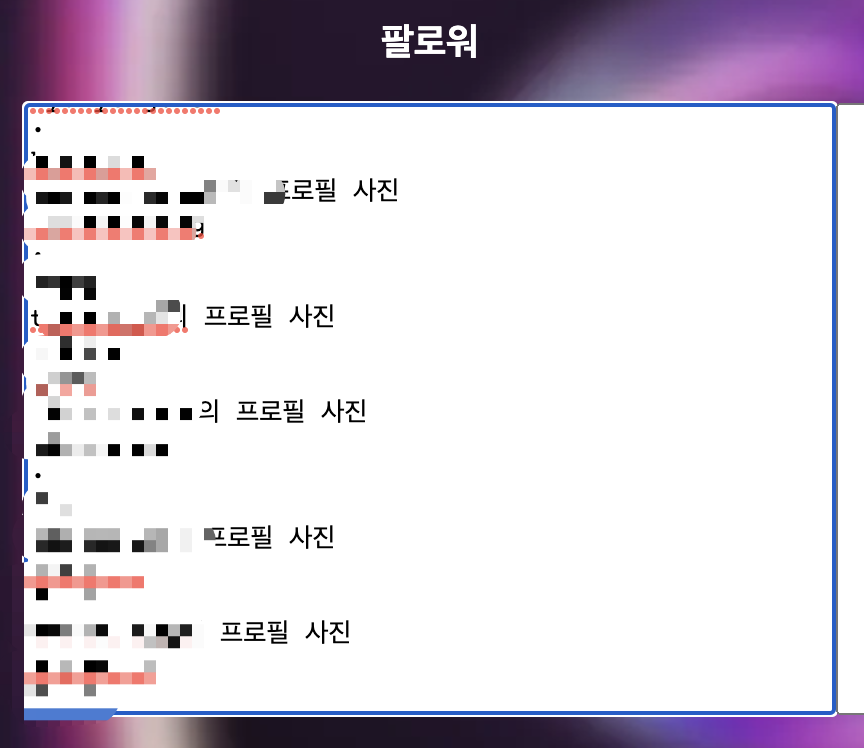

저희 웹사이트는 고유한 아이디로 회원을 구분합니다. 아이디를 잊지
말아주세요.

인스타그램에 로그인합니다.
자신의 프로필 탭으로 접속합니다.

팔로워 및 팔로우 탭을 각각 사용합니다.

빨간색 점 부분을 클릭하여 화살표 방향으로
드래그하여 모든 사용자에 범위 지정합니다.

더 이상 로딩이 안될 때까지 드래그하면
다음 사진과 같이 파란색 영역이 설정됩니다.

인스타그램 분석기에 복사 붙여넣기(Ctrl+C, Ctrl+V)하고,
팔로잉 탭도 동일하게 진행합니다.